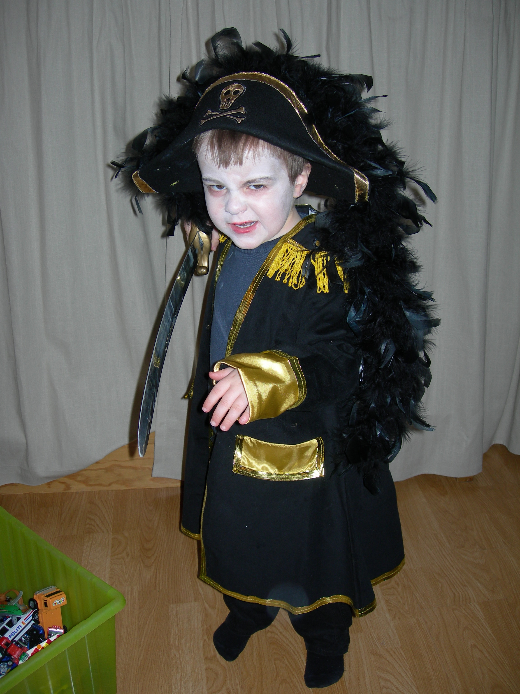

Om meg
Yo! Jeg er OsloReviews, en ung ambisiøs matanmelder fra Ammerud som elsker digg mat. Jeg skal vandre rundt for å finne ut kvaliteten på spisesteder i Oslo (+noen honorable mentions) og dele mine erfaringer. Uansett hvor jeg spiser, gir jeg alltid ærlige og objektive tilbakemeldinger.
Denne nettsidens mål er å være en guide for de beste og værste restaurantene, kebabsjappene og gatekjøkkenene jeg har besøkt i Oslo. Jeg jukser aldri; er det en anmeldelse, betyr det at jeg har spist mat der. Peace out mafakkas!